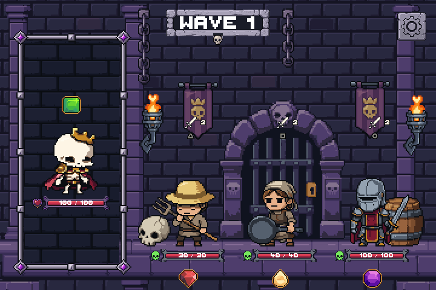
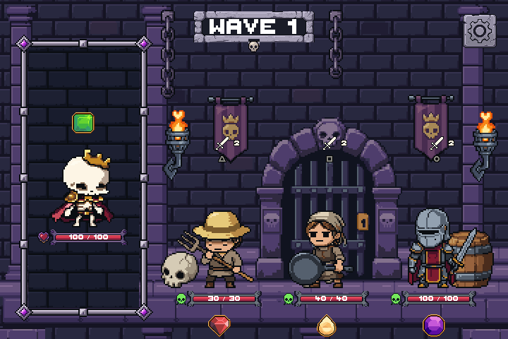
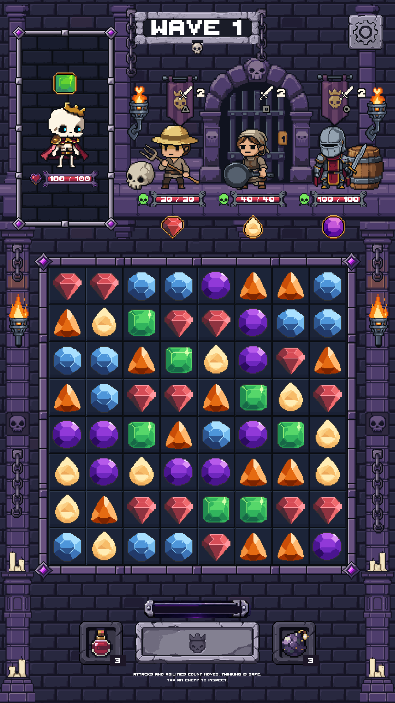
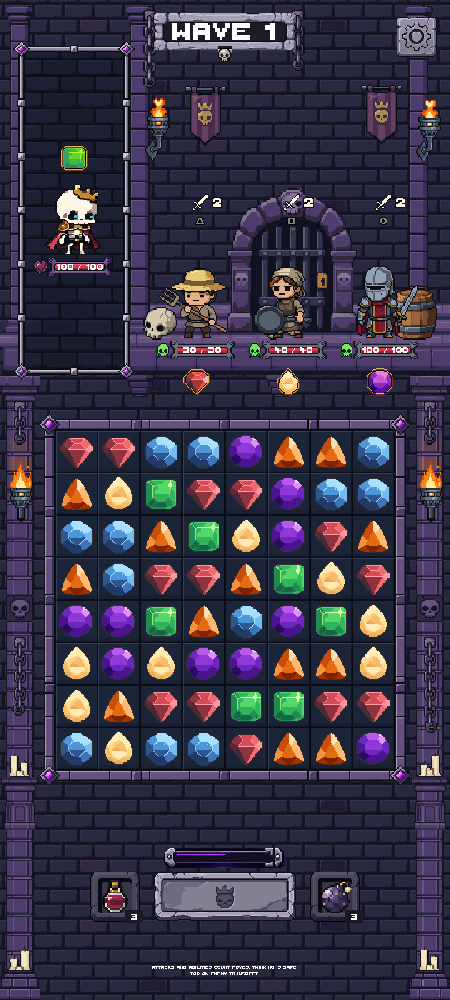
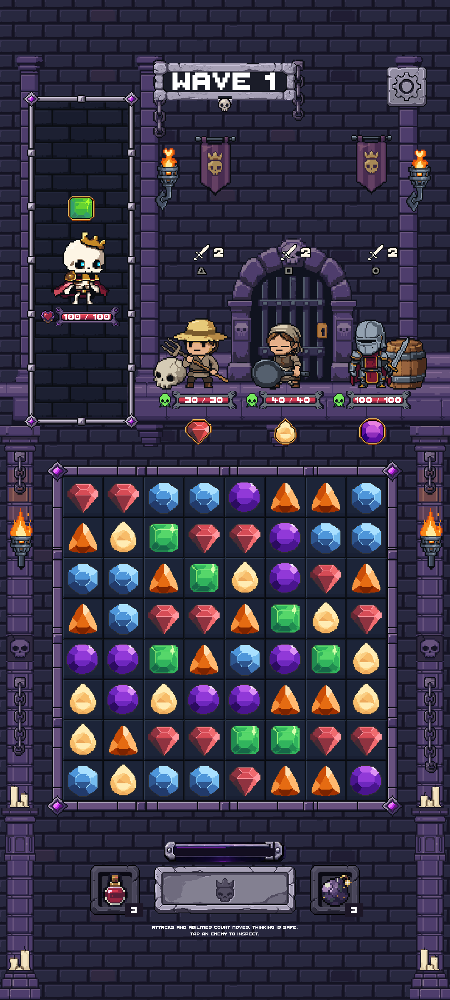
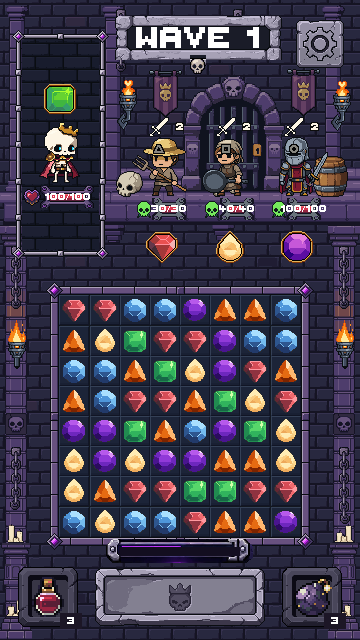
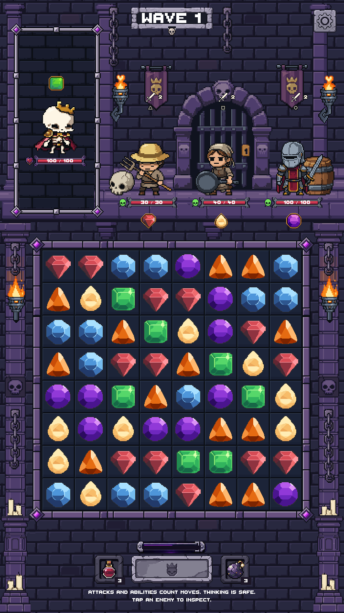
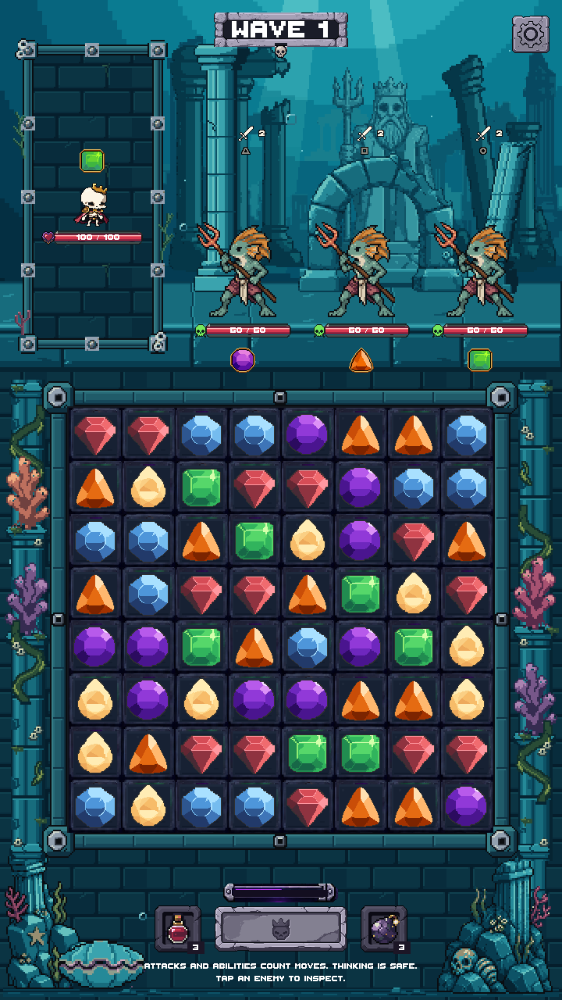

REJECTED FIRST PASS — retained as history. Open the connected-floor correction.
The approved stone tiles form a deeper, 36-native-pixel standing surface. Actors, health bars, separator, board and controls retain their exact positions. No asset pixels were changed.


Five Dungeon profiles pass exact before/after checks: changes stay within the added floor, including zero changed pixels inside the portrait mask. The underwater zone remains unchanged.





